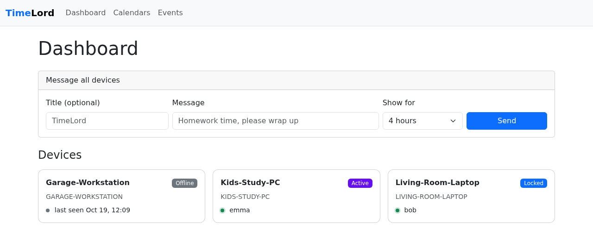
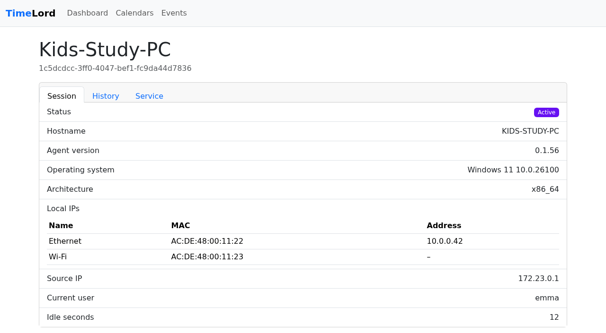
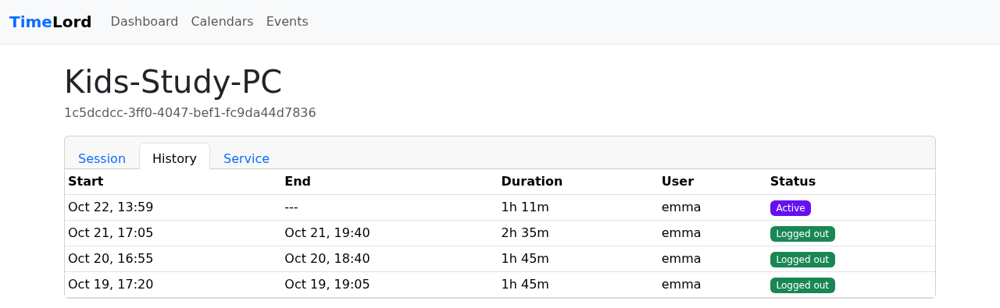
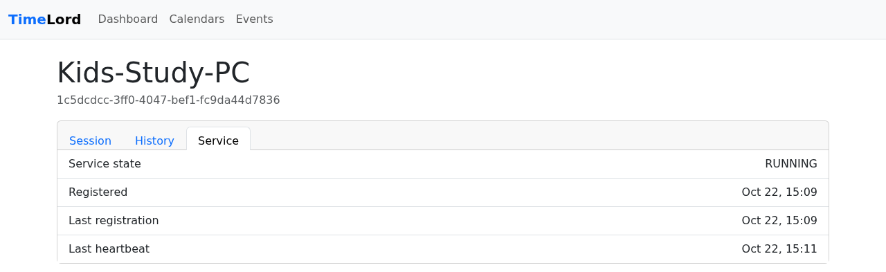
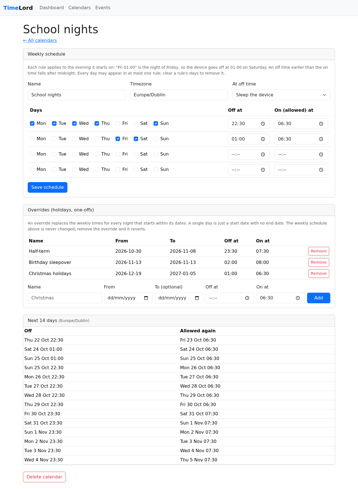
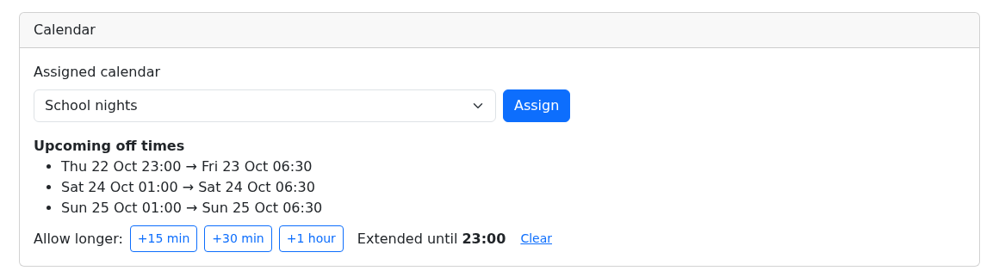

TimeLord¶
TimeLord tracks how Windows devices on your network are actually being used — who's logged in, for how long, and whether the machine is even reachable — shows it on a live dashboard, and can put devices to sleep or shut them down on a calendar you control, warning the person at the keyboard first.
Developer preview — not for production use
This is a working proof of the system's shape, not a hardened product. Expect rough edges and breaking changes between versions. Things worth knowing before you point it at real devices — details in Before you deploy this:
- It acts on devices. A device with a calendar is put to sleep or shut down at its off times. Session limits, forced breaks and connectivity rules are not implemented — the project's tagline still describes the eventual product.
- Devices without a calendar still get put to sleep overnight. A hard-wired sleep runs 02:00–06:00 local time, and an agent that can't reach the controller at all also sleeps the device 01:00–08:30 — neither configurable from the controller.
- Every agent must reach the controller directly, on the same network(s). Everything is unicast HTTP — no NAT traversal, relay, or cloud/VPN routing.
It also runs over plain, unauthenticated HTTP — and that includes the admin API, so anyone who can reach the controller can send messages, grant extra time and delete devices. See Security boundary before running it anywhere but a trusted local network.
What it actually does today¶
- Windows agent (Rust service) watches Windows session/power notifications — logon, lock, unlock, logoff, console/RDP connect and disconnect, suspend, resume — and the currently logged-in user (including one already logged in when the service starts), and reports them to a controller. Every event is queued to local disk before delivery, so a controller outage never loses data; queued events retry with backoff and flush immediately on reconnect or shutdown.
- Controller (Java / Spring Boot / PostgreSQL) accepts registration, heartbeats, and events
over HTTP, and shows each device as one of three states:
- Offline — no events received within the timeout window.
- Inactive — online (agent reachable, recent heartbeats), but nobody's logged in.
- Active — online and a user is actually logged in right now.
- Login sessions — a per-device history of login → logout spans, derived from the event log, distinct from "the agent was running." Starting the service with nobody logged in shows the machine online but produces no session at all.
- Calendars — named weekly on/off schedules (e.g. Sun–Thu off 22:30, Fri/Sat off 01:00, on at 06:30) with dated overrides for holidays that never modify the base schedule. Assign one to each device; the agent sleeps or shuts the device down at off time and keeps enforcing from a local cache even if the controller is down. See Calendars.
- Allow longer — one click (+15 / +30 / +60 minutes) lets a device stay on past its off time; the agent hears about it within moments via a long poll.
- Notifier and messages — a small per-user program shows Windows toast warnings before a sleep or shutdown, and messages you send from the dashboard to one or all devices. See Notifier.
- Dashboard — a server-rendered admin UI: device list with live status, per-device detail (network interfaces, current user, login history, calendar, messages), calendar management, a searchable event log, and device deletion.
Screenshots¶






Get started¶
TimeLord runs as two containers — postgres + controller — via docker compose:
$ cp .env.example .env # edit TIMELORD_PUBLIC_URL to your LAN IP
$ docker compose up --build # postgres + controller on :9099, discovery UDP on :45821
Open http://localhost:9099 for the dashboard, or:
$ curl http://localhost:9099/api/v1/system/info
Try the agent against it (from a dev machine, any OS)¶
$ cd agent
$ TIMELORD_CONTROLLER_URL=http://localhost:9099 cargo run -- run
timelord-agent> logon
timelord-agent> lock
timelord-agent> quit
This registers a device, sends an AGENT_STARTED/USER_LOGON/... event trail, and a heartbeat —
all visible on the dashboard within a few seconds. See Agent for what
logon/lock/... actually mean (the dev backend's interactive REPL stands in for real Windows
session notifications when not running on Windows).
Components¶
| Component | Path | Language | What it does |
|---|---|---|---|
| TimeLord Agent | agent/ |
Rust (Windows service) | Tracks usage, reports it, enforces the calendar |
| TimeLord Notifier | notifier/ |
Rust (per-user program) | Toast warnings and messages for the logged-on user |
| Shared IPC types | ipc/ |
Rust (library) | Agent ↔ notifier pipe message types |
| TimeLord Controller | controller/ |
Java 21 / Spring Boot | Registration, heartbeats, events, calendars, messages, dashboard |
| TimeLord Protocol | protocol/ |
JSON Schema | Not yet populated |
Further reading¶
- Architecture — component diagram, discovery/registration sequence, event delivery and idempotency, security boundary, known limitations
- Agent — agent internals, CLI, configuration, local dev workflow
- Controller — controller internals, API, running tests
- Calendars — weekly rules, holiday overrides, extending a device, how the agent enforces and caches the schedule
- Notifier — toast warnings, sending messages, the local pipe